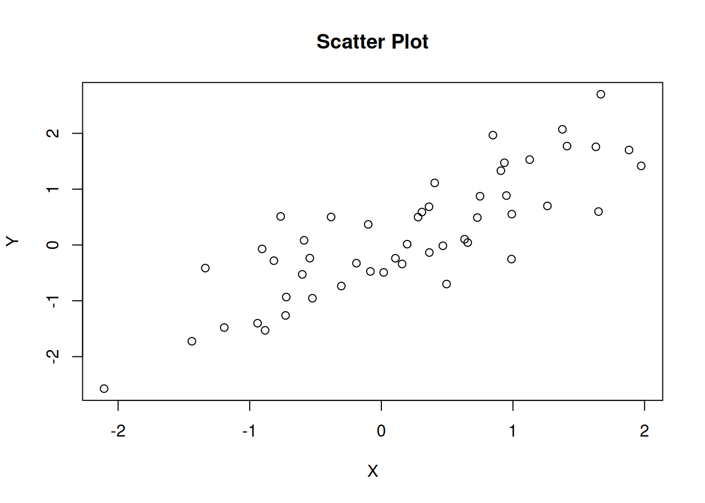
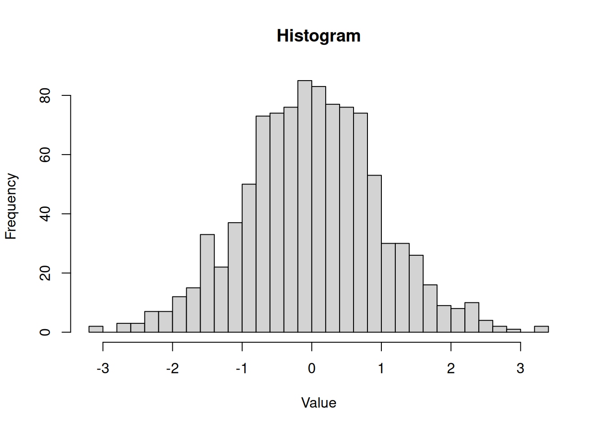
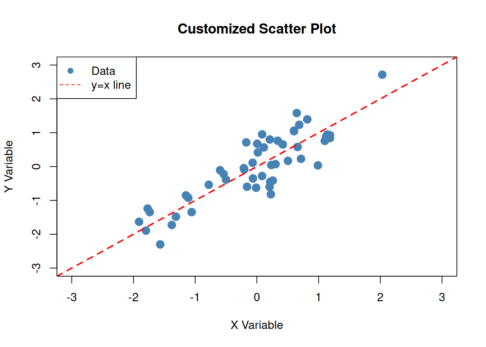
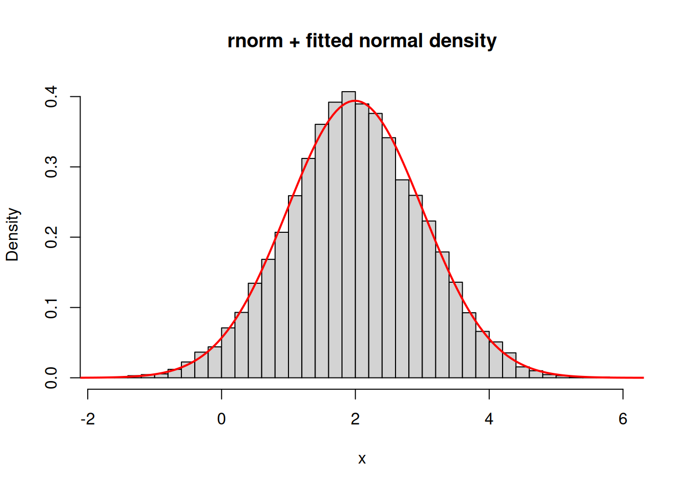
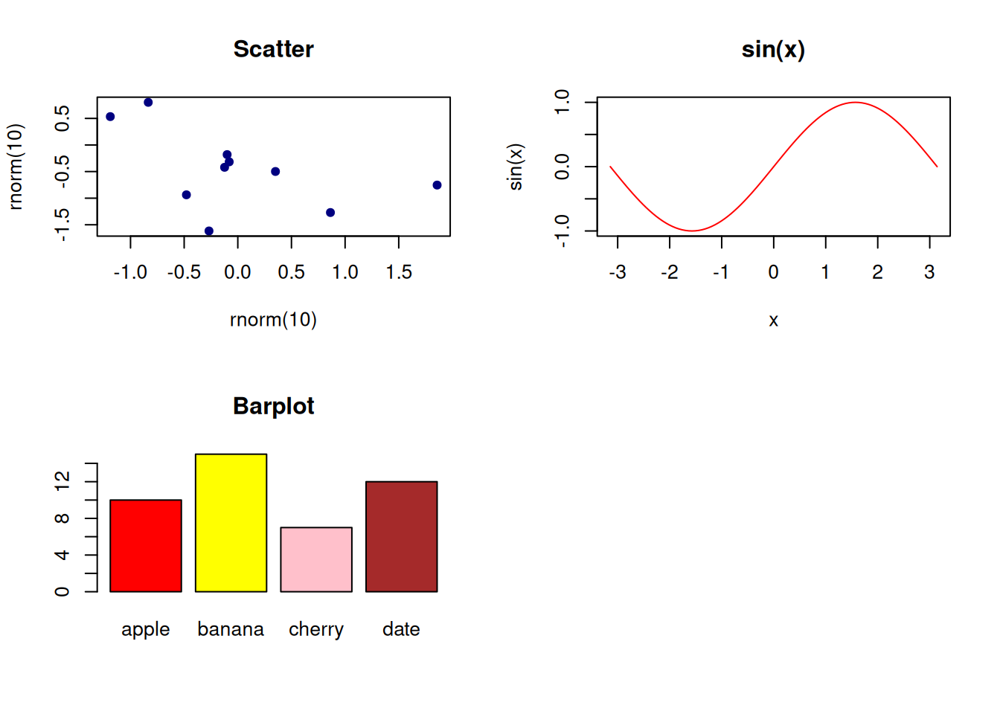
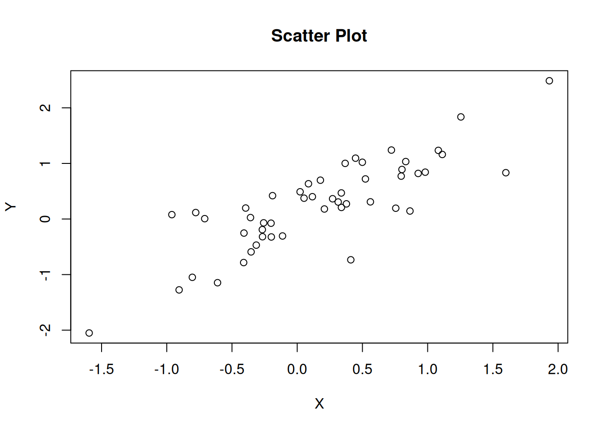
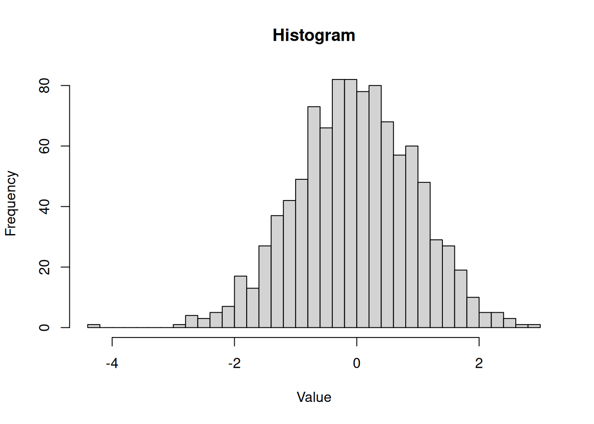
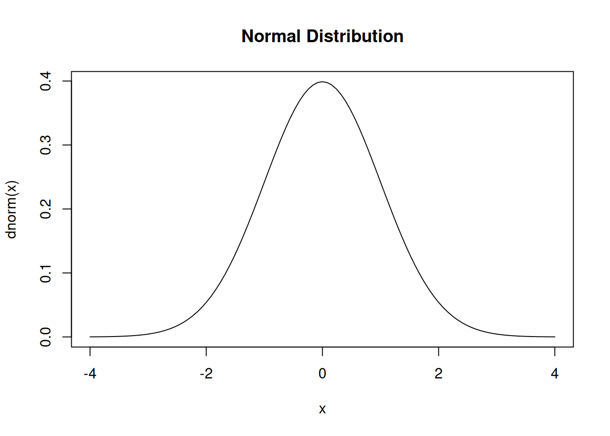
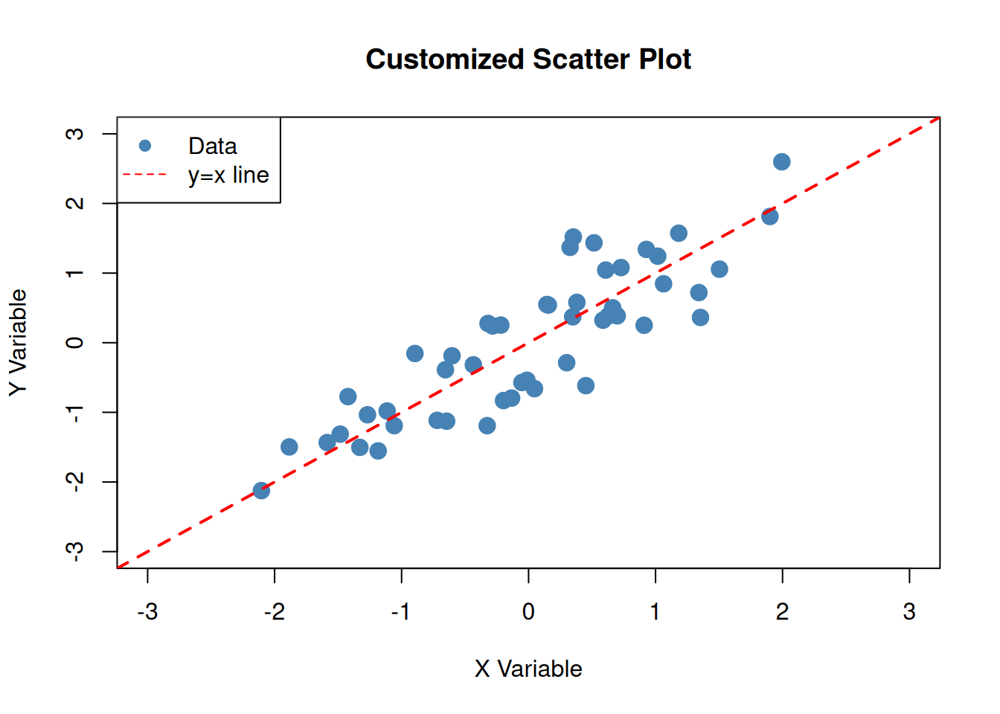

# Simple scatter plotx <-rnorm(50) # 50 random normal valuesy <- x +rnorm(50, 0, 0.5) # y = x + noiseplot(x, y, main ="Scatter Plot", xlab ="X", ylab ="Y")

Show code
# Histogramhist(rnorm(1000), main ="Histogram", xlab ="Value", breaks =30)

Show code
# Density plotcurve(dnorm(x), from =-4, to =4, main ="Normal Distribution")
Working with Colors and Styles
Show code
# Plot with customizationx <-rnorm(50)y <- x +rnorm(50, 0, 0.5)plot(x, y, main ="Customized Scatter Plot",xlab ="X Variable",ylab ="Y Variable",col ="steelblue",pch =19, # point charactercex =1.5, # point sizexlim =c(-3, 3),ylim =c(-3, 3))# Add a lineabline(a =0, b =1, col ="red", lty =2, lwd =2)# Add legendlegend("topleft", legend =c("Data", "y=x line"),col =c("steelblue", "red"),pch =c(19, NA),lty =c(NA, 2))

Slide examples — canonical snippets from R_slides.pdf
Below are compact, well-explained code examples taken from the course slides. They are intended to be runnable and to illustrate the idioms shown in the slides.
Show slide examples
# 1) Interactive session: rnorm -> hist + fitted normal densityset.seed(1)x <-rnorm(10000, mean =2, sd =1)MU <-mean(x)SD <-sd(x)X <-seq(min(x) -1, max(x) +1, length.out =200)Y <-dnorm(X, mean = MU, sd = SD)hist(x, freq =FALSE, breaks =50, main ="rnorm + fitted normal density", xlab ="x")lines(X, Y, col ="red", lwd =2)

Show slide examples
# Explanation: generate samples, estimate mean/sd, overlay theoretical density.# 2) Help & examples (do interactively)# ?plot# help.search("regression")# example(lm)# 3) Package examples# Install once (commented out for reproducibility in the book)# install.packages("devtools")# devtools::install_github("owner/package_name")# Inspect a packagelibrary(help ="stats")# 4) Tidyverse / pipe example (magrittr / dplyr)if (requireNamespace("dplyr", quietly =TRUE)) {library(dplyr) tib <- tibble::tibble(group =rep(c("A","B"), each =5), x =rnorm(10)) tib_summary <- tib |> dplyr::group_by(group) |> dplyr::summarise(mean_x =mean(x, na.rm =TRUE), sd_x =sd(x, na.rm =TRUE), .groups ="drop") tib_summary}
Attaching package: 'dplyr'
The following objects are masked from 'package:stats':
filter, lag
The following objects are masked from 'package:base':
intersect, setdiff, setequal, union
# A tibble: 2 × 3
group mean_x sd_x
<chr> <dbl> <dbl>
1 A -0.916 0.270
2 B 0.131 0.733
Show slide examples
# 5) data.table exampleif (requireNamespace("data.table", quietly =TRUE)) {library(data.table) DT <-data.table(x =1:6, g =c("A","A","B","B","B","A")) DT[, .(mean_x =mean(x)), by = g]}
Attaching package: 'data.table'
The following objects are masked from 'package:dplyr':
between, first, last
g mean_x
<char> <num>
1: A 3
2: B 4
Show slide examples
# 6) Matrix algebra and solveA <-matrix(c(3, 4, 1, 2), nrow =2)k <-c(12, 8)# Solve linear system A %*% beta = kbeta <-solve(A, k)beta
[1] 8 -12
Show slide examples
# Matrix multiplication exampleB <-matrix(1:4, nrow =2)A %*% B
[,1] [,2]
[1,] 5 13
[2,] 8 20
Show slide examples
# 7) layout and additional plotting idiomsoldpar <-par(no.readonly =TRUE)layout(matrix(c(1,2,3,4), 2, 2, byrow =TRUE))plot(rnorm(10), rnorm(10), pch =20, col ="navy", cex =1.25, main ="Scatter")curve(sin(x), -pi, pi, col ="red", main ="sin(x)")#curve(function(x) { y <- sin(x)/x; y[x == 0] <- 1; y }, -pi, pi, col = "darkgreen", lwd = 2, main = "sin(x)/x")barplot(c(apple =10, banana =15, cherry =7, date =12), col =c("red","yellow","pink","brown"), main ="Barplot")par(oldpar)

Show slide examples
# 8) I/O: save/load and reading data (examples left commented for safety)# save(list = ls(all = TRUE), file = "my-session.RData")# savehistory(file = "my-history.R")# pdf("my-plot.pdf"); hist(rnorm(1000)); dev.off()# data <- read.table("yield.txt", header = TRUE)# iris_data <- read.csv("https://example.com/iris.csv", header = TRUE)# numbers <- scan()# 9) Factors and attributescolors <-factor(c("red","blue","red","green","blue"))size <-factor(c("small","medium","large","medium"), levels =c("small","medium","large"), ordered =TRUE)colors
[1] red blue red green blue
Levels: blue green red
Show slide examples
size
[1] small medium large medium
Levels: small < medium < large
# 11) Lazy evaluation (unused argument is not evaluated)play <-function(a, b) a *10# b is not evaluated hereplay(1)
[1] 10
Show slide examples
# End of slide examples
// …existing code…
Working with Probability Distributions
Distribution Functions
R provides four functions for each distribution: - d*: probability density (or mass) - p*: cumulative distribution function (CDF) - q*: quantile function (inverse CDF) - r*: random sample generation
Installing R
Installation Instructions
From CRAN (Recommended): 1. Visit https://cran.r-project.org/ 2. Select your operating system (Linux, macOS, Windows) 3. Download the latest version 4. Run the installer and follow default settings
Key paths after installation: - Windows: C:\Program Files\R\R-X.X.X\ - macOS: /Library/Frameworks/R.framework/ - Linux: Varies by distribution
Installing RStudio
RStudio is an Integrated Development Environment (IDE) that makes R much easier to use.
# Mixed types create vectorsmixed <-c(1, 2, "three", TRUE)print(mixed) # all coerced to character
[1] "1" "2" "three" "TRUE"
Show code
class(mixed)
[1] "character"
Mathematical Functions
Show code
# Trigonometric functions (arguments in radians)sin(pi/2) # sine of π/2 = 1
[1] 1
Show code
cos(0) # cosine of 0 = 1
[1] 1
Show code
tan(pi/4) # tangent of π/4 = 1
[1] 1
Show code
# Logarithmic and exponentiallog(10) # natural logarithm
[1] 2.302585
Show code
log10(100) # base-10 logarithm
[1] 2
Show code
exp(1) # e^1
[1] 2.718282
Show code
# Rounding and absolute valueround(3.7)
[1] 4
Show code
floor(3.7)
[1] 3
Show code
ceiling(3.7)
[1] 4
Show code
abs(-5)
[1] 5
Show code
# Min, max, sum, meanmin(c(1, 5, 3, 9, 2))
[1] 1
Show code
max(c(1, 5, 3, 9, 2))
[1] 9
Show code
sum(c(1, 5, 3, 9, 2))
[1] 20
Show code
mean(c(1, 5, 3, 9, 2))
[1] 4
Working with Packages
Installing Packages
Show code
# Install from CRAN (only do this once)install.packages("ggplot2")install.packages("tidyverse")# Install from GitHub using devtools# install.packages("devtools")# devtools::install_github("username/package")# Install multiple packages at onceinstall.packages(c("ggplot2", "dplyr", "tidyr"))
Loading and Using Packages
Show code
# Load a package (do this each session)library(stats) # loaded by default# Check what's in a package# library(help = "stats")# List all installed packages# installed.packages()# List all loaded packages# search()
Getting Help
Finding Help
Show code
# Get help for a specific function?mean?plot?lm# Search help if you're not sure of function namehelp.search("plotting")??"histogram"# See examples for a functionexample(plot)example(mean)# Find functions with certain keywordsapropos("plot")
id name age height
1 1 Alice 25 170
2 2 Bob 30 180
3 3 Charlie 28 175
4 4 David 35 185
Show code
# Access columnsdf$age
[1] 25 30 28 35
Show code
df[["name"]]
[1] "Alice" "Bob" "Charlie" "David"
Show code
df[, "id"]
[1] 1 2 3 4
Exploring Data
Show code
# Structure of datastr(df)
'data.frame': 4 obs. of 4 variables:
$ id : num 1 2 3 4
$ name : chr "Alice" "Bob" "Charlie" "David"
$ age : num 25 30 28 35
$ height: num 170 180 175 185
Show code
# Summary statisticssummary(df)
id name age height
Min. :1.00 Length:4 Min. :25.00 Min. :170.0
1st Qu.:1.75 Class :character 1st Qu.:27.25 1st Qu.:173.8
Median :2.50 Mode :character Median :29.00 Median :177.5
Mean :2.50 Mean :29.50 Mean :177.5
3rd Qu.:3.25 3rd Qu.:31.25 3rd Qu.:181.2
Max. :4.00 Max. :35.00 Max. :185.0
Show code
# Dimensionsnrow(df)
[1] 4
Show code
ncol(df)
[1] 4
Show code
dim(df)
[1] 4 4
Show code
# Column namesnames(df)
[1] "id" "name" "age" "height"
Show code
colnames(df)
[1] "id" "name" "age" "height"
Control Flow
Conditional Statements
Show code
x <-5# if statementif (x >0) {cat("x is positive\n")} elseif (x <0) {cat("x is negative\n")} else {cat("x is zero\n")}
# Function with multiple argumentsadd <-function(a, b) {return(a + b)}add(3, 7)
[1] 10
Show code
# Function with default argumentsgreet <-function(name, greeting ="Hello") {return(paste(greeting, name))}greet("Alice")
[1] "Hello Alice"
Show code
greet("Bob", greeting ="Hi")
[1] "Hi Bob"
Using … (Variable Arguments)
Show code
# Function that accepts any number of argumentssum_all <-function(...) {return(sum(c(...)))}sum_all(1, 2, 3, 4, 5)
[1] 15
Show code
# Useful in functions that wrap other functionsmy_mean <-function(x, ...) {return(mean(x, ...))}my_mean(c(1, 2, 3, NA), na.rm =TRUE)
[1] 2
Basic Visualization
Plotting with Base R
Show code
# Simple scatter plotx <-rnorm(50) # 50 random normal valuesy <- x +rnorm(50, 0, 0.5) # y = x + noiseplot(x, y, main ="Scatter Plot", xlab ="X", ylab ="Y")

Show code
# Histogramhist(rnorm(1000), main ="Histogram", xlab ="Value", breaks =30)

Show code
# Density plotcurve(dnorm(x), from =-4, to =4, main ="Normal Distribution")

Working with Colors and Styles
Show code
# Plot with customizationx <-rnorm(50)y <- x +rnorm(50, 0, 0.5)plot(x, y, main ="Customized Scatter Plot",xlab ="X Variable",ylab ="Y Variable",col ="steelblue",pch =19, # point charactercex =1.5, # point sizexlim =c(-3, 3),ylim =c(-3, 3))# Add a lineabline(a =0, b =1, col ="red", lty =2, lwd =2)# Add legendlegend("topleft", legend =c("Data", "y=x line"),col =c("steelblue", "red"),pch =c(19, NA),lty =c(NA, 2))

Working with Probability Distributions
Density, CDF, and Quantiles
Distribution Functions
R provides four functions for each distribution: - d*: probability density (or mass) - p*: cumulative distribution function (CDF) - q*: quantile function (inverse CDF) - r*: random sample generation
Normal Distribution
Show code
# Density functiondnorm(0, mean =0, sd =1) # density at x=0
# Check current working directorygetwd()# Change working directorysetwd("/path/to/directory")# List files in current directorylist.files()dir()
Summary
This introduction covered:
✓ Basics: R as calculator, variables, operators
✓ Data structures: Vectors, data frames
✓ Functions: Mathematical, statistical, visualization
✓ Packages: Installation and usage
✓ Control flow: If statements, loops
✓ Functions: Writing your own
✓ Distributions: Working with probability distributions
✓ Help: Getting assistance
In the chapters that follow, you’ll see R code examples integrated throughout. Use this introduction as a reference when you encounter new functions or syntax!
---title: "Introduction to R for Bayesian Inference"---# Introduction to R for Bayesian Inference// ...existing code...## Basic Visualization```{r}#| code-fold: true#| code-summary: "Show code"# Simple scatter plotx <-rnorm(50) # 50 random normal valuesy <- x +rnorm(50, 0, 0.5) # y = x + noiseplot(x, y, main ="Scatter Plot", xlab ="X", ylab ="Y")# Histogramhist(rnorm(1000), main ="Histogram", xlab ="Value", breaks =30)# Density plotcurve(dnorm(x), from =-4, to =4, main ="Normal Distribution")```### Working with Colors and Styles```{r}#| code-fold: true#| code-summary: "Show code"# Plot with customizationx <-rnorm(50)y <- x +rnorm(50, 0, 0.5)plot(x, y, main ="Customized Scatter Plot",xlab ="X Variable",ylab ="Y Variable",col ="steelblue",pch =19, # point charactercex =1.5, # point sizexlim =c(-3, 3),ylim =c(-3, 3))# Add a lineabline(a =0, b =1, col ="red", lty =2, lwd =2)# Add legendlegend("topleft", legend =c("Data", "y=x line"),col =c("steelblue", "red"),pch =c(19, NA),lty =c(NA, 2))```## Slide examples — canonical snippets from R_slides.pdfBelow are compact, well-explained code examples taken from the course slides. They are intended to be runnable and to illustrate the idioms shown in the slides.```{r}#| code-fold: true#| code-summary: "Show slide examples"# 1) Interactive session: rnorm -> hist + fitted normal densityset.seed(1)x <-rnorm(10000, mean =2, sd =1)MU <-mean(x)SD <-sd(x)X <-seq(min(x) -1, max(x) +1, length.out =200)Y <-dnorm(X, mean = MU, sd = SD)hist(x, freq =FALSE, breaks =50, main ="rnorm + fitted normal density", xlab ="x")lines(X, Y, col ="red", lwd =2)# Explanation: generate samples, estimate mean/sd, overlay theoretical density.# 2) Help & examples (do interactively)# ?plot# help.search("regression")# example(lm)# 3) Package examples# Install once (commented out for reproducibility in the book)# install.packages("devtools")# devtools::install_github("owner/package_name")# Inspect a packagelibrary(help ="stats")# 4) Tidyverse / pipe example (magrittr / dplyr)if (requireNamespace("dplyr", quietly =TRUE)) {library(dplyr) tib <- tibble::tibble(group =rep(c("A","B"), each =5), x =rnorm(10)) tib_summary <- tib |> dplyr::group_by(group) |> dplyr::summarise(mean_x =mean(x, na.rm =TRUE), sd_x =sd(x, na.rm =TRUE), .groups ="drop") tib_summary}# 5) data.table exampleif (requireNamespace("data.table", quietly =TRUE)) {library(data.table) DT <-data.table(x =1:6, g =c("A","A","B","B","B","A")) DT[, .(mean_x =mean(x)), by = g]}# 6) Matrix algebra and solveA <-matrix(c(3, 4, 1, 2), nrow =2)k <-c(12, 8)# Solve linear system A %*% beta = kbeta <-solve(A, k)beta# Matrix multiplication exampleB <-matrix(1:4, nrow =2)A %*% B# 7) layout and additional plotting idiomsoldpar <-par(no.readonly =TRUE)layout(matrix(c(1,2,3,4), 2, 2, byrow =TRUE))plot(rnorm(10), rnorm(10), pch =20, col ="navy", cex =1.25, main ="Scatter")curve(sin(x), -pi, pi, col ="red", main ="sin(x)")#curve(function(x) { y <- sin(x)/x; y[x == 0] <- 1; y }, -pi, pi, col = "darkgreen", lwd = 2, main = "sin(x)/x")barplot(c(apple =10, banana =15, cherry =7, date =12), col =c("red","yellow","pink","brown"), main ="Barplot")par(oldpar)# 8) I/O: save/load and reading data (examples left commented for safety)# save(list = ls(all = TRUE), file = "my-session.RData")# savehistory(file = "my-history.R")# pdf("my-plot.pdf"); hist(rnorm(1000)); dev.off()# data <- read.table("yield.txt", header = TRUE)# iris_data <- read.csv("https://example.com/iris.csv", header = TRUE)# numbers <- scan()# 9) Factors and attributescolors <-factor(c("red","blue","red","green","blue"))size <-factor(c("small","medium","large","medium"), levels =c("small","medium","large"), ordered =TRUE)colorssize# 10) Misc idioms: integer division, modulo, Inf, NA, rep, ifelse119%/%12119%%12exp(-Inf)is.na(NA)rep(9, 5)ifelse(1:5>3, "big", "small")# 11) Lazy evaluation (unused argument is not evaluated)play <-function(a, b) a *10# b is not evaluated hereplay(1)# End of slide examples```// ...existing code...## Working with Probability Distributions::: {.callout-note appearance="simple"}## Distribution FunctionsR provides four functions for each distribution:- `d*`: probability density (or mass)- `p*`: cumulative distribution function (CDF)- `q*`: quantile function (inverse CDF)- `r*`: random sample generation::: Installing R::: {.callout-warning appearance="simple" collapse="true"}## Installation Instructions**From CRAN (Recommended):**1. Visit https://cran.r-project.org/2. Select your operating system (Linux, macOS, Windows)3. Download the latest version4. Run the installer and follow default settings**Key paths after installation:**- Windows: `C:\Program Files\R\R-X.X.X\`- macOS: `/Library/Frameworks/R.framework/`- Linux: Varies by distribution:::### Installing RStudioRStudio is an Integrated Development Environment (IDE) that makes R much easier to use.::: {.callout-warning appearance="simple" collapse="true"}## RStudio Installation1. Download RStudio Desktop (Free Version): https://posit.co/download/rstudio-desktop/2. Install like any normal program3. RStudio automatically detects your R installation**RStudio provides:**- Script editor for writing code files- Interactive console for testing commands- Environment/History panel to track variables- Files/Plots/Packages/Help panels for navigation:::## Getting Started with R### First Steps```{r}#| code-fold: true#| code-summary: "Show code"# R works as a calculator2+25*310/22^3# power operator```### Basic Arithmetic```{r}#| code-fold: true#| code-summary: "Show code"# Standard operations10+5# addition10-5# subtraction10*5# multiplication10/5# division10%%3# modulo (remainder)10%/%3# integer division2^10# exponentiation```### Variables and Assignment```{r}#| code-fold: true#| code-summary: "Show code"# Create variables using <-x <-5y <-10z <- x + y# Display resultsprint(x)print(z)# Variable names are case-sensitiveX <-100# This is different from xcat("x =", x, "\n")cat("X =", X, "\n")```### Working with VectorsVectors are the fundamental data structure in R:```{r}#| code-fold: true#| code-summary: "Show code"# Create vectorsv1 <-c(1, 2, 3, 4, 5)v2 <-1:5# sequence from 1 to 5v3 <-seq(0, 10, by=2) # sequence with stepprint(v1)print(v2)print(v3)# Vector operationsv1 +10# add scalar to each elementv1 *2# multiply each elementsqrt(v1) # apply function to each element```### Vector Math and Recycling```{r}#| code-fold: true#| code-summary: "Show code"x <-c(1, 2, 3, 4)y <-c(10, 20)# Recycling: shorter vector repeatsresult <- x + yprint(result)# Element-wise operationsx *2x^2x /2```### Data Types```{r}#| code-fold: true#| code-summary: "Show code"# Numeric (double by default)a <-5.7class(a)typeof(a)# Integerb <-5Lclass(b)typeof(b)# Character (strings)text <-"Hello, R!"class(text)# Logical (Boolean)is_true <-TRUEis_false <-FALSEclass(is_true)# Mixed types create vectorsmixed <-c(1, 2, "three", TRUE)print(mixed) # all coerced to characterclass(mixed)```### Mathematical Functions```{r}#| code-fold: true#| code-summary: "Show code"# Trigonometric functions (arguments in radians)sin(pi/2) # sine of π/2 = 1cos(0) # cosine of 0 = 1tan(pi/4) # tangent of π/4 = 1# Logarithmic and exponentiallog(10) # natural logarithmlog10(100) # base-10 logarithmexp(1) # e^1# Rounding and absolute valueround(3.7)floor(3.7)ceiling(3.7)abs(-5)# Min, max, sum, meanmin(c(1, 5, 3, 9, 2))max(c(1, 5, 3, 9, 2))sum(c(1, 5, 3, 9, 2))mean(c(1, 5, 3, 9, 2))```## Working with Packages### Installing Packages```{r}#| code-fold: true#| code-summary: "Show code"#| eval: false# Install from CRAN (only do this once)install.packages("ggplot2")install.packages("tidyverse")# Install from GitHub using devtools# install.packages("devtools")# devtools::install_github("username/package")# Install multiple packages at onceinstall.packages(c("ggplot2", "dplyr", "tidyr"))```### Loading and Using Packages```{r}#| code-fold: true#| code-summary: "Show code"# Load a package (do this each session)library(stats) # loaded by default# Check what's in a package# library(help = "stats")# List all installed packages# installed.packages()# List all loaded packages# search()```## Getting Help### Finding Help```{r}#| code-fold: true#| code-summary: "Show code"#| eval: false# Get help for a specific function?mean?plot?lm# Search help if you're not sure of function namehelp.search("plotting")??"histogram"# See examples for a functionexample(plot)example(mean)# Find functions with certain keywordsapropos("plot")```## Working with Data### Creating Data Frames```{r}#| code-fold: true#| code-summary: "Show code"# Create a data framedf <-data.frame(id =c(1, 2, 3, 4),name =c("Alice", "Bob", "Charlie", "David"),age =c(25, 30, 28, 35),height =c(170, 180, 175, 185))print(df)# Access columnsdf$agedf[["name"]]df[, "id"]```### Exploring Data```{r}#| code-fold: true#| code-summary: "Show code"# Structure of datastr(df)# Summary statisticssummary(df)# Dimensionsnrow(df)ncol(df)dim(df)# Column namesnames(df)colnames(df)```## Control Flow### Conditional Statements```{r}#| code-fold: true#| code-summary: "Show code"x <-5# if statementif (x >0) {cat("x is positive\n")} elseif (x <0) {cat("x is negative\n")} else {cat("x is zero\n")}# Vectorized conditionaly <-c(-2, -1, 0, 1, 2)result <-ifelse(y >0, "positive", "non-positive")print(result)```### Loops```{r}#| code-fold: true#| code-summary: "Show code"# For loopfor (i in1:5) {cat("i =", i, "\n")}# While loopcounter <-1while (counter <=3) {cat("counter =", counter, "\n") counter <- counter +1}# Apply functions (vectorized alternative)result <-sapply(1:5, function(i) i^2)print(result)```## Writing Functions### Basic Functions```{r}#| code-fold: true#| code-summary: "Show code"# Simple functionsquare <-function(x) {return(x^2)}square(5)# Function with multiple argumentsadd <-function(a, b) {return(a + b)}add(3, 7)# Function with default argumentsgreet <-function(name, greeting ="Hello") {return(paste(greeting, name))}greet("Alice")greet("Bob", greeting ="Hi")```### Using ... (Variable Arguments)```{r}#| code-fold: true#| code-summary: "Show code"# Function that accepts any number of argumentssum_all <-function(...) {return(sum(c(...)))}sum_all(1, 2, 3, 4, 5)# Useful in functions that wrap other functionsmy_mean <-function(x, ...) {return(mean(x, ...))}my_mean(c(1, 2, 3, NA), na.rm =TRUE)```## Basic Visualization### Plotting with Base R```{r}#| code-fold: true#| code-summary: "Show code"# Simple scatter plotx <-rnorm(50) # 50 random normal valuesy <- x +rnorm(50, 0, 0.5) # y = x + noiseplot(x, y, main ="Scatter Plot", xlab ="X", ylab ="Y")# Histogramhist(rnorm(1000), main ="Histogram", xlab ="Value", breaks =30)# Density plotcurve(dnorm(x), from =-4, to =4, main ="Normal Distribution")```### Working with Colors and Styles```{r}#| code-fold: true#| code-summary: "Show code"# Plot with customizationx <-rnorm(50)y <- x +rnorm(50, 0, 0.5)plot(x, y, main ="Customized Scatter Plot",xlab ="X Variable",ylab ="Y Variable",col ="steelblue",pch =19, # point charactercex =1.5, # point sizexlim =c(-3, 3),ylim =c(-3, 3))# Add a lineabline(a =0, b =1, col ="red", lty =2, lwd =2)# Add legendlegend("topleft", legend =c("Data", "y=x line"),col =c("steelblue", "red"),pch =c(19, NA),lty =c(NA, 2))```## Working with Probability Distributions### Density, CDF, and Quantiles::: {.callout-note appearance="simple"}## Distribution FunctionsR provides four functions for each distribution:- `d*`: probability density (or mass)- `p*`: cumulative distribution function (CDF)- `q*`: quantile function (inverse CDF)- `r*`: random sample generation:::### Normal Distribution```{r}#| code-fold: true#| code-summary: "Show code"# Density functiondnorm(0, mean =0, sd =1) # density at x=0# CDFpnorm(1.96, mean =0, sd =1) # P(X <= 1.96)# Quantile (inverse CDF)qnorm(0.975, mean =0, sd =1) # 97.5th percentile# Random samplessamples <-rnorm(1000, mean =0, sd =1)hist(samples, main ="1000 samples from N(0,1)", breaks =30)```### Other Common Distributions```{r}#| code-fold: true#| code-summary: "Show code"# Uniform distributiondunif(0.5, min =0, max =1) # density at 0.5runif(5, min =0, max =1) # 5 random samples# Binomial distributiondbinom(5, size =10, prob =0.5) # P(X=5)pbinom(5, size =10, prob =0.5) # P(X<=5)rbinom(5, size =10, prob =0.5) # 5 random samples# Poisson distributiondpois(3, lambda =2) # P(X=3)rpois(5, lambda =2) # 5 random samples# Exponential distributiondexp(1, rate =1) # density at x=1rexp(5, rate =1) # 5 random samples```## Useful Tips and Tricks### Checking and Coercing Types```{r}#| code-fold: true#| code-summary: "Show code"# Check typesis.numeric(5)is.character("hello")is.logical(TRUE)is.na(NA)# Coerce typesas.numeric("5")as.character(5)as.integer(5.7)```### Session Information```{r}#| code-fold: true#| code-summary: "Show code"# Clean up workspacels() # list all objects# Remove specific objects# rm(x)# Session informationsessionInfo()```### Working Directory```{r}#| code-fold: true#| code-summary: "Show code"#| eval: false# Check current working directorygetwd()# Change working directorysetwd("/path/to/directory")# List files in current directorylist.files()dir()```## SummaryThis introduction covered:✓ **Basics**: R as calculator, variables, operators ✓ **Data structures**: Vectors, data frames ✓ **Functions**: Mathematical, statistical, visualization ✓ **Packages**: Installation and usage ✓ **Control flow**: If statements, loops ✓ **Functions**: Writing your own ✓ **Distributions**: Working with probability distributions ✓ **Help**: Getting assistance In the chapters that follow, you'll see R code examples integrated throughout. Use this introduction as a reference when you encounter new functions or syntax!---**Ready to explore Bayesian inference with R?** Continue to [Part I: Foundations](#part-i-foundations)